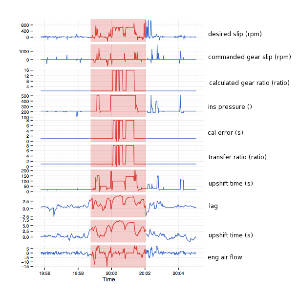

Acerta CHECK
Detecting hidden anomalies in your machine performance can mean the world of a difference to your business.
Detecting an anomaly late results in massive product recalls, long equipment downtimes,
weeks of setup and testing wasted, and ultimately huge costs to your organization.
Acerta CHECK is an advanced software solution that accelerates the discovery of
critical problems in complex data.
It combines state-of-the-art statistical methods, data mining algorithms,
and machine learning techniques to automatically uncover critical intelligence and
find anomalies in machine behavior early.
Automatically Detect Anomalies
 Your data
Your data
 Acerta's insight
Acerta's insight
 Clear results
Clear results
Acerta CHECK uses data you already collect from your system - no additional
sensor or data acquisition technology is necessary.
Our algorithms can take your raw data and extract high-level features. The representation
captures the correct and optimal behavior of your system. Any deviations
from the expected patterns are detected and flagged.
Acerta is very efficient at learning how your ideal system should act.
It uses a minimal amount of initial representative data and can be up and running
in no time.
Acerta combines its Machine Intelligence with the expertise of
engineers and domain experts.
Our feedback loop is optimized to reduce false diagnostics and predictions
by keeping the engineer in the loop. Any incorrectly flagged anomaly
can be identified and reincorporated to optimize the analysis.
We have applied and validated Acerta CHECK on a large number
of data sets including vehicle telemetry data, airplane operational data,
sensor signal data, kernel logs, among other embedded systems.
Acerta easily identifies anomalous areas undistinguishable to the human eye.
Cause of the Problem

Finding the anomalies is the first half of the journey, the next
question to answer is "What went wrong?".
Acerta helps you zero in on the cause of the problem by
identifying the signals responsible.
It reduces the anomalies to a pool of top contributing factors,
letting you worry about addressing the problem not
looking for a needle in the haystack.
Acerta also highlights the trends leading up to failures by
detecting the slightest, yet significant, performance changes.
This allows you to notice problems before they become acute,
to react fast, and reduce downtime and costs.
Receive timely notifications when equipment service will be needed.